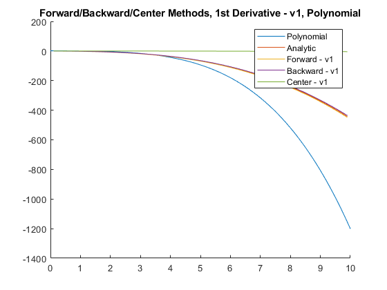
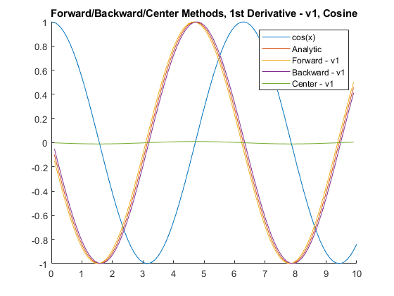
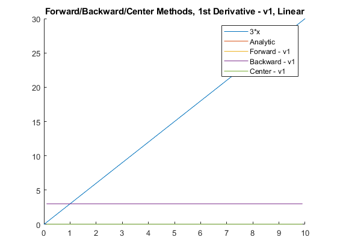
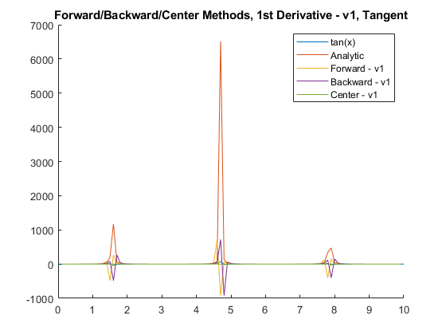
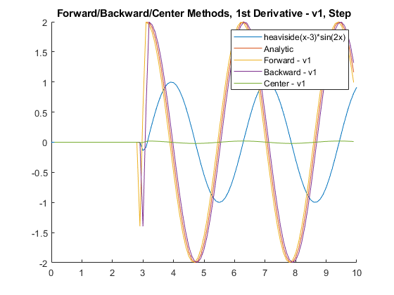
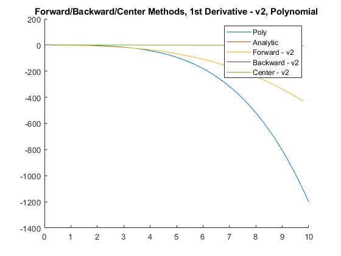
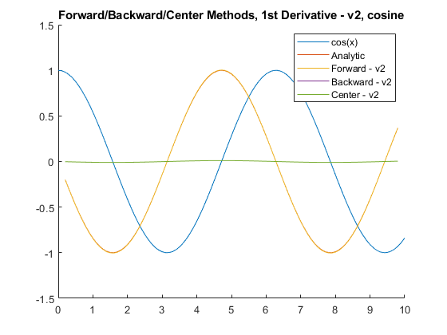
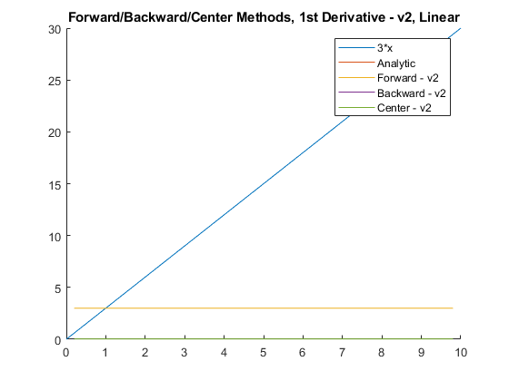
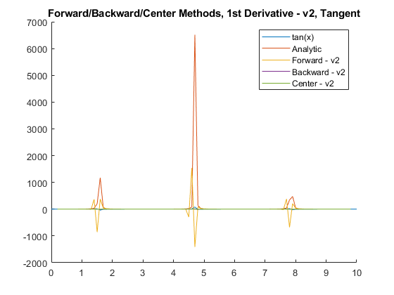
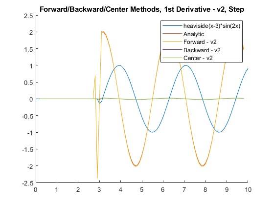

Contents
eqs to test
polynomial from book: (-.1*x^4) - (.15*x^3) - (.5*x^2) - (.25*x) + 1.2; cos(x) linear (3x) tan(x) step function heaviside
% graphs of the error: % multiple graphs (10) % 1 - first estimations, 1st deriv of each of 3 methods % forward vs backward vs center vs actual % 2 - second estimations, 1st deriv of each of 3 methods % forward vs backward vs center vs actual % 3 - first estimations, 2nd deriv of each of 3 methods % forward vs backward vs center vs actual % 4 - second estimations, 2nd deriv of each of 3 methods % forward vs backward vs center vs actual % compare 1st derivative methods % 5 - first vs second vs actual (forward) % 6 - first vs second vs actual (backward) % 7 - first vs second vs actual (center) % compare 2nd derivative methods % 8 - first vs second vs actual (forward) % 9 - first vs second vs actual (backward) % 10 - first vs second vs actual (center) clear;clc;close all; syms x;
Define Testing functions
The following 5 functions will be used to test the derivative approximation techniques.
poly = (-.1*x^4) - (.15*x^3) - (.5*x^2) - (.25*x) + 1.2; cosine = cos(x); linear = 3*x; tangent = tan(x);%% eqs to test % polynomial from book: (-.1*x^4) - (.15*x^3) - (.5*x^2) - (.25*x) + 1.2; % cos(x) % linear (3x) % tan(x) % step function heaviside % graphs of the error: % multiple graphs (10) % 1 - first estimations, 1st deriv of each of 3 methods % forward vs backward vs center vs actual % 2 - second estimations, 1st deriv of each of 3 methods % forward vs backward vs center vs actual % 3 - first estimations, 2nd deriv of each of 3 methods % forward vs backward vs center vs actual % 4 - second estimations, 2nd deriv of each of 3 methods % forward vs backward vs center vs actual % compare 1st derivative methods % 5 - first vs second vs actual (forward) % 6 - first vs second vs actual (backward) % 7 - first vs second vs actual (center) % compare 2nd derivative methods % 8 - first vs second vs actual (forward) % 9 - first vs second vs actual (backward) % 10 - first vs second vs actual (center) clear;clc;close all; syms x;
Define Testing functions
The following 5 functions will be used to test the derivative approximation techniques.
poly = (-.1*x^4) - (.15*x^3) - (.5*x^2) - (.25*x) + 1.2; cosine = cos(x); linear = 3*x; tangent = tan(x); step = heaviside(x-3)*sin(2*x);
Setup
xmin = 0; xdelta = .1; xmax = 10; x_vector = [xmin : xdelta : xmax]; poly_h = matlabFunction(poly); lin_h = matlabFunction(linear); step_h = matlabFunction(step); poly_res = Compare_Difference_Formulas(poly, xmin, xmax, xdelta); cos_res = Compare_Difference_Formulas(cosine, xmin, xmax, xdelta); linear_res = Compare_Difference_Formulas(linear, xmin, xmax, xdelta); tangent_res = Compare_Difference_Formulas(tangent, xmin, xmax, xdelta); step_res = Compare_Difference_Formulas(step, xmin, xmax, xdelta); step = heaviside(x-3)*sin(2*x);
Setup
xmin = 0; xdelta = .1; xmax = 10; x_vector = [xmin : xdelta : xmax]; poly_h = matlabFunction(poly); lin_h = matlabFunction(linear); step_h = matlabFunction(step); poly_res = Compare_Difference_Formulas(poly, xmin, xmax, xdelta); cos_res = Compare_Difference_Formulas(cosine, xmin, xmax, xdelta); linear_res = Compare_Difference_Formulas(linear, xmin, xmax, xdelta); tangent_res = Compare_Difference_Formulas(tangent, xmin, xmax, xdelta); step_res = Compare_Difference_Formulas(step, xmin, xmax, xdelta);
Forward/Backward/Center, 1st Derivative, v1
figure; % plot function itself, 1st deriv actual, 1st deriv method 1, 1st deriv hold on; plot(x_vector, poly_h(x_vector)); % plot the polynomial plot(x_vector(2:end-1), poly_res{1,1}); % 1st deriv, actual plot(x_vector(2:end-1), poly_res{1,2}); % 1st derivative, forward v1 plot(x_vector(2:end-1), poly_res{1,6}); % 1st deriv, backward v1 plot(x_vector(2:end-1), poly_res{1,10}); % 1st deriv, center v1 title('Forward/Backward/Center Methods, 1st Derivative - v1, Polynomial'); legend('Polynomial', 'Analytic', 'Forward - v1', ... 'Backward - v1', 'Center - v1'); figure; hold on; plot(x_vector, cos(x_vector)); % plot the cosine plot(x_vector(2:end-1), cos_res{1,1}); % 1st deriv, actual plot(x_vector(2:end-1), cos_res{1,2}); % 1st derivative, forward v1 plot(x_vector(2:end-1), cos_res{1,6}); % 1st deriv, backward v1 plot(x_vector(2:end-1), cos_res{1,10}); % 1st deriv, center v1 title('Forward/Backward/Center Methods, 1st Derivative - v1, Cosine'); legend('cos(x)', 'Analytic', 'Forward - v1', ... 'Backward - v1', 'Center - v1'); figure; hold on; plot(x_vector, lin_h(x_vector)); % plot(x_vector(2:end-1), linear_res{1,1}); % 1st deriv, actual plot(x_vector(2:end-1), linear_res{1,2}); % 1st derivative, forward v1 plot(x_vector(2:end-1), linear_res{1,6}); % 1st deriv, backward v1 plot(x_vector(2:end-1), linear_res{1,10}); % 1st deriv, center v1 title('Forward/Backward/Center Methods, 1st Derivative - v1, Linear'); legend('3*x', 'Analytic', 'Forward - v1', ... 'Backward - v1', 'Center - v1'); figure; hold on; plot(x_vector, tan(x_vector)); % plot(x_vector(2:end-1), tangent_res{1,1}); % 1st deriv, actual plot(x_vector(2:end-1), tangent_res{1,2}); % 1st derivative, forward v1 plot(x_vector(2:end-1), tangent_res{1,6}); % 1st deriv, backward v1 plot(x_vector(2:end-1), tangent_res{1,10}); % 1st deriv, center v1 title('Forward/Backward/Center Methods, 1st Derivative - v1, Tangent'); legend('tan(x)', 'Analytic', 'Forward - v1', ... 'Backward - v1', 'Center - v1'); figure; hold on; plot(x_vector, step_h(x_vector)); % plot(x_vector(2:end-1), step_res{1,1}); % 1st deriv, actual plot(x_vector(2:end-1), step_res{1,2}); % 1st derivative, forward v1 plot(x_vector(2:end-1), step_res{1,6}); % 1st deriv, backward v1 plot(x_vector(2:end-1), step_res{1,10}); % 1st deriv, center v1 title('Forward/Backward/Center Methods, 1st Derivative - v1, Step'); legend('heaviside(x-3)*sin(2x)', 'Analytic', 'Forward - v1', ... 'Backward - v1', 'Center - v1');    
Forward/Backward/Center, 1st Derivative, v2
figure; hold on; plot(x_vector, poly_h(x_vector)); % plot(x_vector(3:end-2), poly_res{1,3}); % 1st deriv, actual plot(x_vector(3:end-2), poly_res{1,4}); % 1st derivative, forward v2 plot(x_vector(3:end-2), poly_res{1,8}); % 1st deriv, backward v2 plot(x_vector(3:end-2), poly_res{1,12}); % 1st deriv, center v2 title('Forward/Backward/Center Methods, 1st Derivative - v2, Polynomial'); legend('Poly', 'Analytic', 'Forward - v2', ... 'Backward - v2', 'Center - v2'); figure; hold on; plot(x_vector, cos(x_vector)); % plot(x_vector(3:end-2), cos_res{1,3}); % 1st deriv, actual plot(x_vector(3:end-2), cos_res{1,4}); % 1st derivative, forward v2 plot(x_vector(3:end-2), cos_res{1,8}); % 1st deriv, backward v2 plot(x_vector(3:end-2), cos_res{1,12}); % 1st deriv, center v2 title('Forward/Backward/Center Methods, 1st Derivative - v2, cosine'); legend('cos(x)', 'Analytic', 'Forward - v2', ... 'Backward - v2', 'Center - v2'); figure; hold on; plot(x_vector, lin_h(x_vector)); % plot(x_vector(3:end-2), linear_res{1,3}); % 1st deriv, actual plot(x_vector(3:end-2), linear_res{1,4}); % 1st derivative, forward v2 plot(x_vector(3:end-2), linear_res{1,8}); % 1st deriv, backward v2 plot(x_vector(3:end-2), linear_res{1,12}); % 1st deriv, center v2 title('Forward/Backward/Center Methods, 1st Derivative - v2, Linear'); legend('3*x', 'Analytic', 'Forward - v2', ... 'Backward - v2', 'Center - v2'); figure; hold on; plot(x_vector, tan(x_vector)); % plot(x_vector(3:end-2), tangent_res{1,3}); % 1st deriv, actual plot(x_vector(3:end-2), tangent_res{1,4}); % 1st derivative, forward v2 plot(x_vector(3:end-2), tangent_res{1,8}); % 1st deriv, backward v2 plot(x_vector(3:end-2), tangent_res{1,12}); % 1st deriv, center v2 title('Forward/Backward/Center Methods, 1st Derivative - v2, Tangent'); legend('tan(x)', 'Analytic', 'Forward - v2', ... 'Backward - v2', 'Center - v2'); figure; hold on; plot(x_vector, step_h(x_vector)); % plot(x_vector(3:end-2), step_res{1,3}); % 1st deriv, actual plot(x_vector(3:end-2), step_res{1,4}); % 1st derivative, forward v2 plot(x_vector(3:end-2), step_res{1,8}); % 1st deriv, backward v2 plot(x_vector(3:end-2), step_res{1,12}); % 1st deriv, center v2 title('Forward/Backward/Center Methods, 1st Derivative - v2, Step'); legend('heaviside(x-3)*sin(2x)', 'Analytic', 'Forward - v2', ... 'Backward - v2', 'Center - v2');    